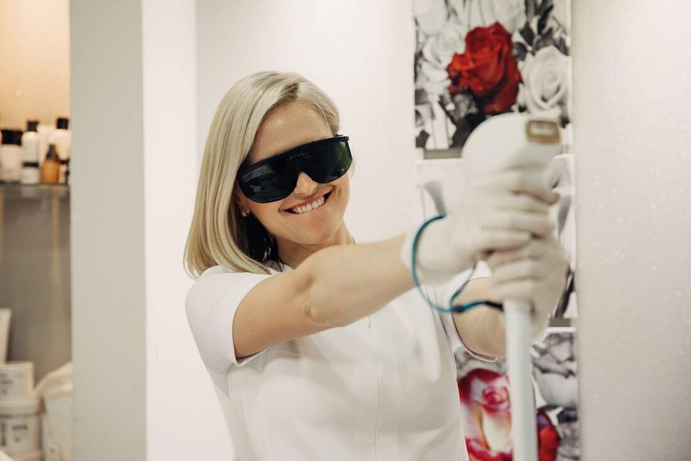
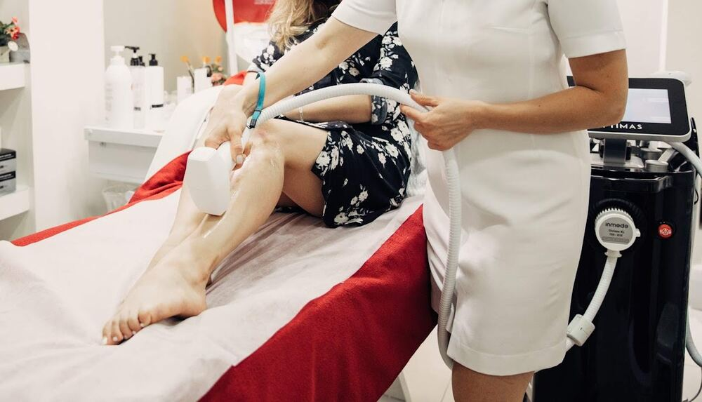
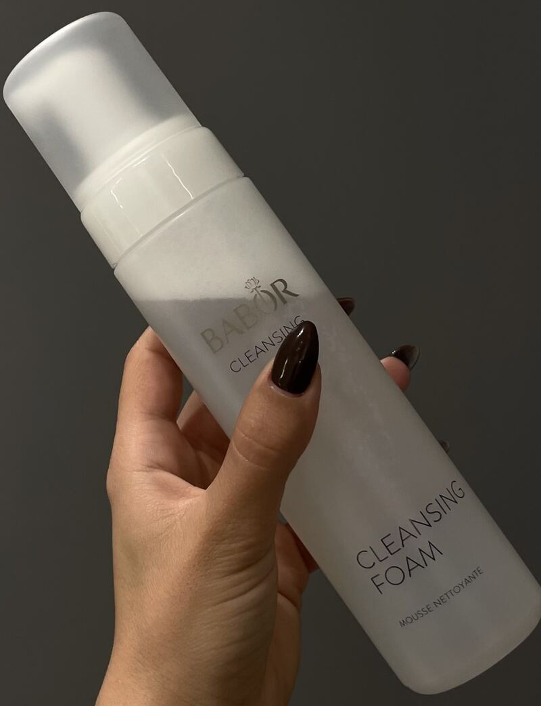
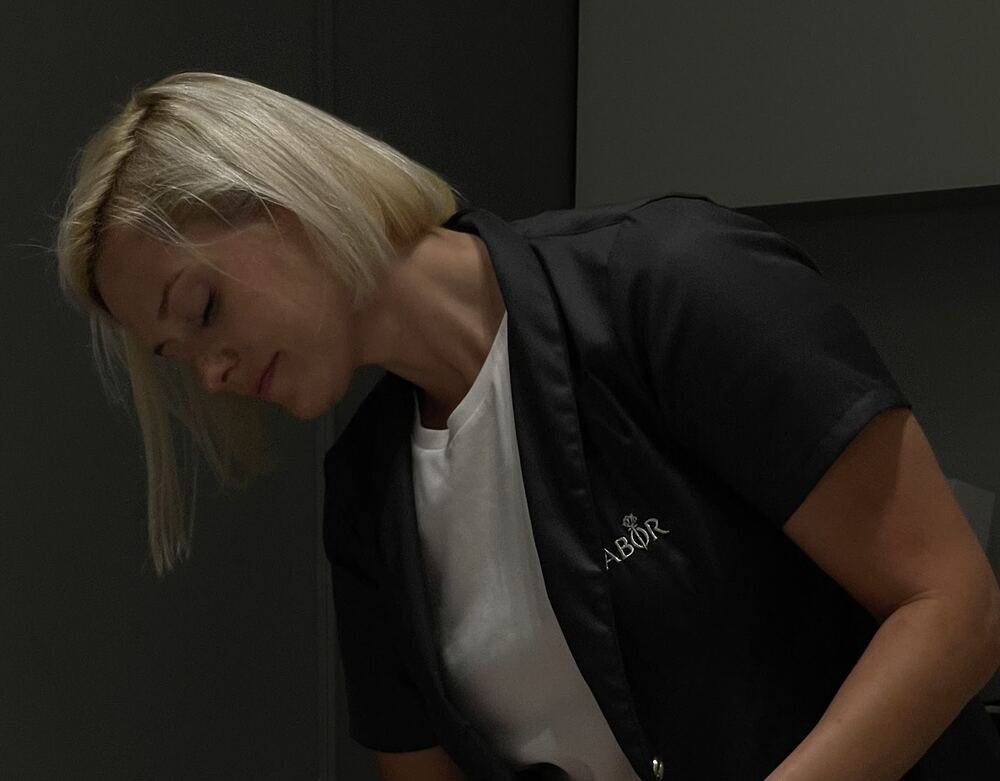
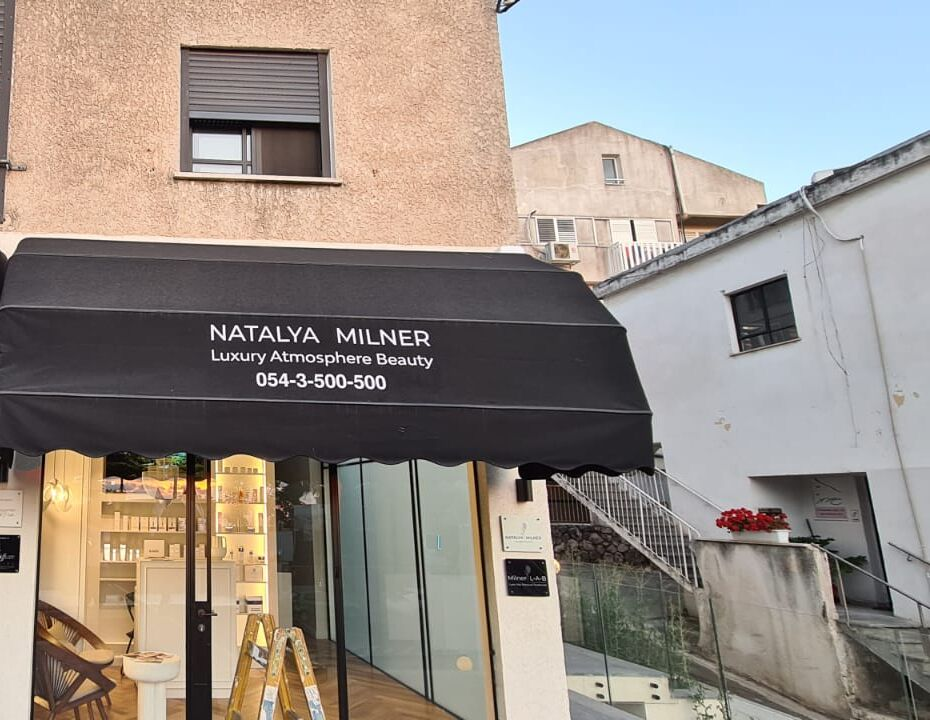

נטליה מילנרNatalia Milner
טיפולי פנים והסרת שיער בלייזרFacials and laser hair removal
קליניקה בשדרות מוריה 123, חיפה · 5.0 בגוגל מ־46 ביקורותA clinic at 123 Moriah Blvd, Haifa · 5.0 on Google from 46 reviews
אווירה של יוקרהA luxury atmosphere
יוקרהאווירהיופי
המקוםThe room
קירות אפורים עם פיתוחים, פרחים לבנים ומנורה רכה, מתחת לסוכך השחור בשדרות מוריה.Grey panelled walls, white flowers and a soft lamp, under the black awning on Moriah Boulevard.
המדפיםThe shelves
סרומים, קצפים ותכשירים מקצועיים, לטיפול בקליניקה ולשגרת הטיפוח בבית.Serums, foams and professional products, for the treatment room and for your routine at home.



טיפוליםTreatments
הצצה לקליניקהInside the clinic
גללו או גררו כדי לסובב.Scroll or drag to turn.


5.0
46 ביקורות בגוגל46 reviews on Google
״הקליניקה נעימה ומזמינה ונטליה פשוט מקצועית ברמות. תמיד מסבירה לי בדיוק מה היא עושה, עונה בסבלנות על כל שאלה…״“The clinic is pleasant and inviting and Natalia is simply highly professional. She always explains exactly what she’s doing and patiently answers every question…”
״הגעתי לנטליה לטיפול פנים וזו הייתה חוויה נהדרת. יש בה רוגע ונעימות שמורגשים מהרגע הראשון, והטיפול עצמו מאוד מרגיע ומשחרר.״“I came to Natalia for a facial and it was a wonderful experience. She has a calm and warmth you feel from the first moment, and the treatment itself is very soothing and relaxing.”
״נטליה מקצועית, נקייה והוגנת- לא מנסה לדחוף מוצרים וטיפולים שלא לצורך, או להבטיח פתרונות קסם.״“Natalia is professional, clean and fair — she doesn’t try to push products and treatments you don’t need, or promise magic solutions.”
״מקצועיות ברמה הכי גבוהה, יחס אישי, נעים ומדויק, ותמיד מרגישים שנמצאים בידיים הכי טובות.״“Professionalism at the highest level, personal attention, pleasant and precise, and you always feel you’re in the best hands.”
״מקצועית, נעימה ועדינה, עם יחס אישי ומדהים.״“Professional, pleasant and gentle, with amazing personal attention.”
לתאם טיפולBook a treatment
בוחרים, ונפתחת הודעה מוכנה לנטליה בוואטסאפ.Choose, and a ready message to Natalia opens in WhatsApp.
שאלות קצרותShort answers
איפה הקליניקה?Where is the clinic?
בשדרות מוריה 123, חיפה, מתחת לסוכך השחור שכתוב עליו NATALYA MILNER.At 123 Moriah Blvd, Haifa, under the black awning that reads NATALYA MILNER.
מתי פתוח?When is it open?
ראשון עד חמישי 8:00–18:00, שישי 8:00–13:00, בשבת סגור.Sunday to Thursday 8:00–18:00, Friday 8:00–13:00, closed on Saturday.
אילו טיפולים יש?Which treatments are there?
טיפולי פנים והסרת שיער בלייזר. על טיפול מסוים אפשר לשאול את נטליה בוואטסאפ.Facials and laser hair removal. To ask about a specific treatment, message Natalia on WhatsApp.
איך קובעים תור?How do I book?
בוואטסאפ או בטלפון 054-350-0500. הטופס למעלה מכין את ההודעה בשבילך.On WhatsApp or by phone, 054-350-0500. The form above writes the message for you.
מה זה L·A·B?What does L·A·B mean?
ראשי התיבות של Luxury Atmosphere Beauty, כמו שכתוב בלוגו ועל הסוכך.Luxury Atmosphere Beauty, as written in the logo and on the awning.